Train your body, forge your will, and push your limits. The most honest RPG system for physical fitness — because in reality, the gym doesn't care about your backstory.
In Reality RPG, physical exercise is not a sidebar — it's a full mechanical subsystem. Your character's body is the primary tool they use to navigate the world. Exercise affects VIG recovery, SP reduction, long-term attribute gains, and even PRC through body image changes. This page covers everything from your first pushup to marathon training plans.
Every workout attempt uses the standard system: roll 2d10 + relevant attribute modifier(s) + Fitness Level bonus vs. the activity's Target Number (TN). Success means the workout was effective; failure means poor results, wasted time, or potential injury.
Your maximum Stress Points (SP) = 20 + RES mod × 5. Exercise can reduce SP, but overtraining can increase it.
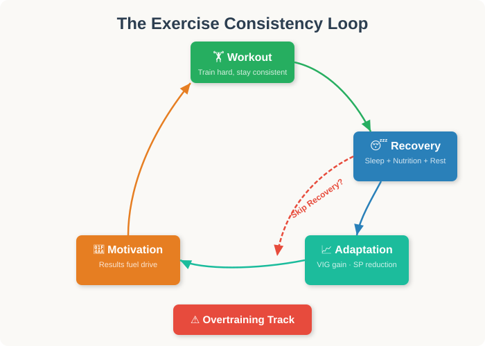
Exercise is one of the most impactful systems in Reality RPG because it touches nearly every aspect of your character's life:
Regular exercise restores Vigor faster. A fit character recovers from illness and fatigue at double speed compared to a sedentary one.
Each successful workout reduces stress points. Endurance exercise is particularly effective — running, swimming, and yoga can each remove 2–5 SP per session.
Consistent exercise over weeks and months leads to permanent VIG increases. Martial arts boost DXT and RES. Yoga boosts RES directly.
Physical changes from training affect Presence. Getting in shape can increase PRC; becoming overly obsessive about appearance can decrease it. The GM adjudicates based on character goals and self-perception.
Every character has a Fitness Level from 0 to 5. This is a derived stat that reflects your character's current conditioning. It provides a flat bonus to all exercise checks and grants passive benefits.
Fitness Levels can decrease if a character stops training. After 4 weeks of no exercise, drop one Fitness Level. After 8 weeks, drop another. Injury, illness, or life events (new baby, job loss, etc.) can cause immediate drops. The body remembers, though — regaining a lost level takes half the normal time.
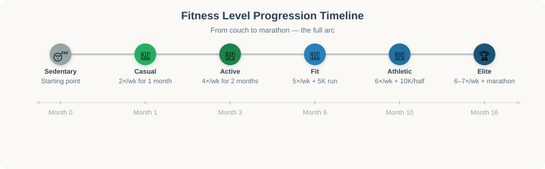
Exercise isn't just about the workout — it's about what happens between workouts. Recovery is when the actual gains happen.
Proper recovery
Full workout benefits apply. No overtraining progression.
Partial recovery
Half workout benefits. +1 to overtraining track.
Poor recovery
No workout benefits. +2 to overtraining track. −1 to next day's exercise checks.
Fuels growth
+1 to all exercise checks that day. Faster VIG recovery after workouts.
Underfuels
−1 to exercise checks. +1 to overtraining track after each workout.
Muscle repair
−1 on overtraining track. Required every 3–4 workout days at Fitness Level 3+.
Accumulated fatigue
+2 on overtraining track. Each day without rest after 4 consecutive workout days.
The gym is the primary training ground for most characters. It offers equipment variety, climate control, and social structure. A typical gym session costs 45–90 minutes of game time.
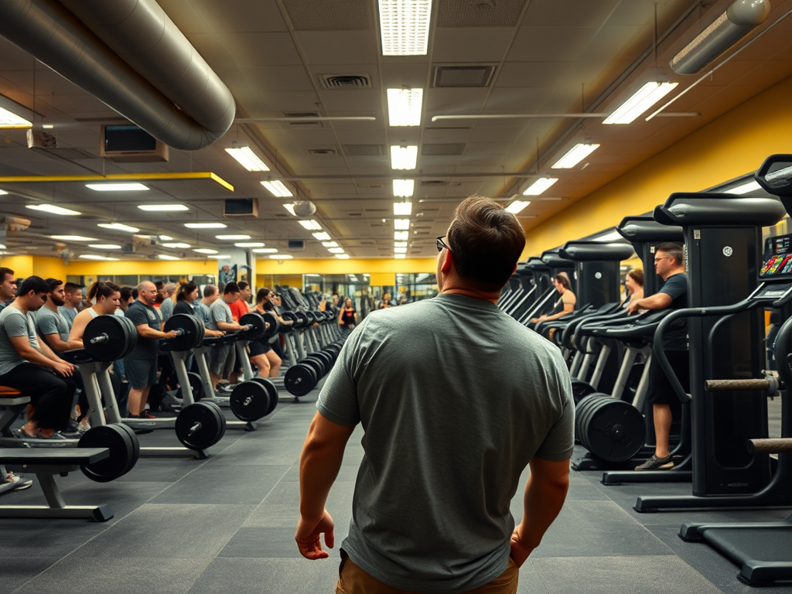
$10–$30/mo
Planet Fitness, YMCAs, big-box gyms
Basic cardio, free weights, some machines. Crowded peak hours.
+0 to exercise checks
$40–$75/mo
LA Fitness, 24 Hour Fitness, local independents
Full equipment range, group classes, locker rooms with showers.
+1 to exercise checks
$80–$150/mo
Equinox, Life Time, boutique studios
Top equipment, pools, saunas, classes, PT options, clean facilities.
+2 to exercise checks
$150–$300+/mo
SoulCycle, private clubs, hotel gyms
PT included, exclusive classes, spa amenities, networking.
+3 + EXP bonus for networking
A standard gym session takes 45–90 minutes. Factor in commute time (15–45 minutes each way depending on proximity) and shower/change time (15 minutes). A realistic gym trip consumes 1.5–3 hours of your character's day.
Barbells, dumbbells, kettlebells — the bread and butter of strength training. Free weights recruit stabilizer muscles and build functional strength, but they carry the highest injury risk.
VIG + Athletics mod (if trained)
45 (light weights, warm-up) → 65 (heavy lifting, PR attempts)
45–60 minutes per session
Effective workout. +1–2 VIG recovery. At FL 3+, progress toward permanent VIG gain. Strong success: "pump" — +1 temp VIG for 24 hours.
Poor form, wasted session, or injury. Muscle strain: −1 VIG for 3 days. Dropped weight: −1 VIG for 1 day + 1 SP from embarrassment.
Dropped weight on foot/body. −2 VIG for 1 week. Possible ER visit ($500–$5000). +3 SP from pain and frustration.
Leg press, chest press, cable machines, lat pulldown — guided resistance that's safer for beginners but less effective for building real-world strength.
VIG + Athletics mod (if trained)
35 (light) → 50 (heavy). 10 pts lower than free weights for equivalent effort.
30–45 minutes per session
Effective workout. +1 VIG recovery. Safer progression for beginners at FL 0–1.
Minor discomfort. −1 to next exercise check that day only. No lasting injury at TNs below 45.
Machine malfunction or improper use. −1 VIG for 2 days. Rare at mid-range TNs.
Treadmill, elliptical, stationary bike, rowing machine — the endurance corner of every gym. Cardio reduces SP most effectively.
VIG + Athletics mod
40 (moderate pace, 20 min) → 55 (high intensity, 45+ min)
20–45 minutes per session
Effective cardio session. −2 SP (−4 SP on strong success). Improved cardiovascular fitness. At FL 2+, progress toward endurance milestones.
Joint pain (knees on treadmill, lower back on bike). −1 to all movement checks next day. No SP reduction.
Overexertion. Faint or severe shortness of breath. −2 VIG for 2 days. +2 SP from frustration. Rowing machine: possible lower back strain.
Battle ropes, plyometric boxes, TRX suspension trainers, medicine balls — high-intensity, full-body movements that simulate real-world athletic demands.
VIG + DXT mod (average) + Athletics mod
50 (basic circuits) → 65 (advanced CrossFit-style WODs)
30–60 minutes per session
Highly effective full-body workout. +2 VIG recovery. −3 SP. At FL 3+, gains count double toward VIG progression.
Poor form under fatigue. Muscle strain: −1 VIG for 3–5 days. +1 on overtraining track regardless.
Serious injury. Plyometric fall: sprained ankle (1–3 weeks). Medicine ball throw gone wrong: wrist strain. −2 VIG, +3 SP, mandatory rest period.
Foam rolling, yoga mats, resistance bands — the recovery-focused activities. Lower TN but essential for long-term health.
RES + VIG mod (average) + Athletics mod
30 (basic stretching) → 40 (deep mobility work, advanced yoga)
15–30 minutes per session
Effective recovery. −2 SP. −1 on overtraining track. Prevents future injuries: −5 to injury TN on next workout.
Overstretching. Minor stiffness for 1 day. No lasting harm.
Pulled muscle during deep stretch. −1 VIG for 2 days. Rare at these TNs.
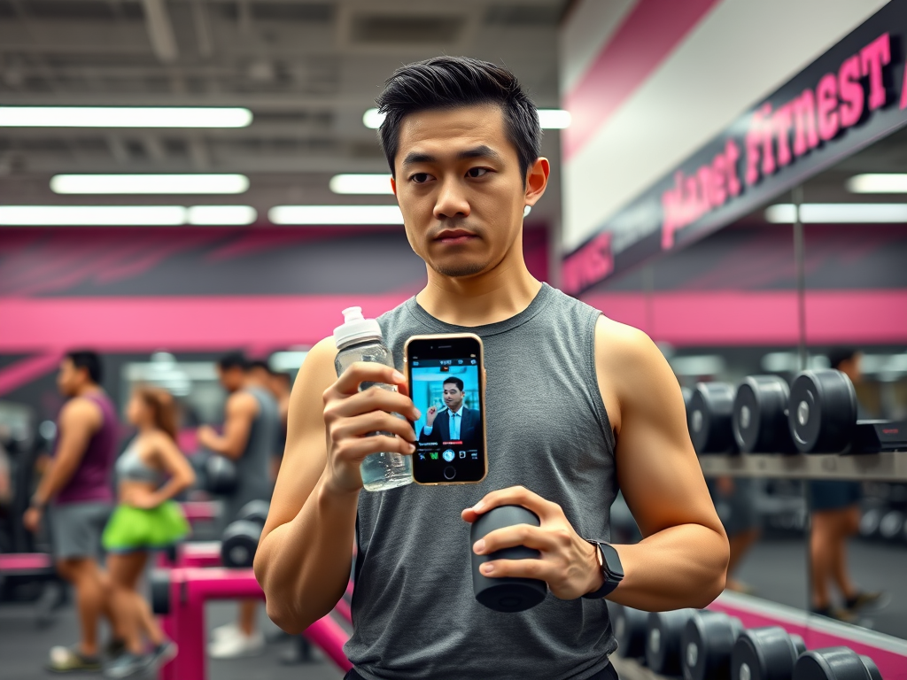
Marcus is a 32-year-old accountant. VIG 6 (+1), RES 8 (+1), Fitness Level 0 (Sedentary). He just joined a Planet Fitness ($15/month) and is attempting a free weights session — his first in years.
The Check: Free weights at moderate weight = TN 50. Marcus rolls 2d10 + VIG mod (+1) + Fitness bonus (+0) = 2d10 + 1.
He rolls a 34 + 1 = 35 vs TN 50. That's ≤ 50 − 5 = 45, so it's a Strong Success! His body remembers old habits. He gets a great pump, +2 VIG recovery, and −2 SP from the endorphin rush. The GM notes his first successful workout toward Fitness Level 1.
Next session, Marcus tries to lift heavier (TN 58). He rolls 52 + 1 = 53 — a normal Success. Good session, but he feels sore for a day. At Fitness Level 0, his body isn't adapted yet.
Outdoor exercise adds environmental variables — weather, terrain, and scenery — that modify TNs and outcomes. Being in nature provides an additional −1 SP bonus on top of normal exercise SP reduction.
Free, accessible, and one of the most effective SP-reduction activities. Running progression is the most common training arc in the game.
Running Training Plan: To progress from jogging to marathon, a character must complete each tier for at least 4 weeks before attempting the next. Each tier requires at least 3 successful runs per week.
Failure effects: Shin splints (−1 to all running checks for 1 week), knee pain (−1 VIG for 3 days), or simply giving up (no SP reduction, +1 SP from frustration).
TN 40 · $200–$2000 for bike + gear
✅ Leg strength, cardio. −2 SP.
❌ Flat tire, saddle soreness.
TN 50 · $500–$5000+ for bike + gear
✅ Full body engagement. −3 SP. Nature bonus.
❌ Falls: −1 VIG for 2 days. Broken bike: $200–$2000 repair.
TN 45 · $15–$30/class or gym membership
✅ High-intensity cardio. −3 SP. Social bonus if group class.
❌ Overexertion: dizziness, nausea.
The ultimate full-body, low-impact workout. Swimming is particularly recommended for characters with joint issues or higher VIG but lower DXT.
Check: VIG + DXT mod · TN 45
✅ Excellent full-body workout. −3 SP. Low joint impact. +2 VIG recovery.
❌ Swimmer's shoulder (−1 to overhead checks for 1 week).
Check: VIG + DXT mod · TN 55
✅ All pool benefits + nature bonus (extra −1 SP). Adventure factor.
❌ Cramps: TN 60 VIG check to shake off. Drowning risk: TN 80 to avoid in rough conditions.
Check: VIG + DXT mod · TN 60
✅ Elite-level endurance. −4 SP. Counts toward FL advancement.
❌ Exhaustion. −2 VIG for 2 days.
Open water swimming carries a drowning risk. If a character fails an open water swim check by 10+ (roll + mods ≥ TN + 10), they must make an emergency VIG check at TN 80 to avoid drowning. This is a life-threatening situation — failure means the character needs rescue, potentially requiring emergency services and significant narrative consequences.
Check: VIG · TN 35 · 2–3 hrs
✅ Nature bonus (−3 SP total). Endurance gains.
❌ Blisters. −1 to walking checks for 2 days.
Check: VIG · TN 45 · 3–5 hrs
✅ Strong cardio. −4 SP. Nature bonus. Possible wildlife encounter.
❌ Sprained ankle: −1 VIG for 1 week. Getting lost: INT check TN 40.
Check: VIG + DXT mod · TN 55 · 4–8 hrs
✅ Full-body workout. −5 SP. Adventure XP. Major event for FL advancement.
❌ Fall: −2 VIG for 2 weeks. Equipment damage. Possible rescue.
The ultimate full-body challenge. Climbing combines physical strength with problem-solving, making it one of the most narratively interesting exercise options.
Check: VIG + DXT mod · TN 50 · $15–$25/session
✅ Full-body strength. Problem-solving bonus (+1 INT checks that day). −2 SP.
❌ Fall onto mat: minor bruising. −1 VIG for 1 day.
Check: VIG + DXT mod · TN 55 · $20–$30/session
✅ Endurance climbing. −3 SP. Trust-building with belay partner (+1 EXP).
❌ Uncomfortable fall (harnessed, safe). −1 VIG for 2 days from jolt.
Check: VIG + DXT mod + RES mod · TN 60–70 · $500–$3000+ for gear
✅ Peak physical + mental challenge. −4 SP. Adventure XP. Major event for FL 4→5.
❌ Harnessed fall: −1 VIG for 1 week. Unprotected fall: TN 75 VIG check or serious injury.
Check: VIG + DXT mod · TN 45
✅ Upper body workout. Nature bonus (−3 SP). Relaxing.
❌ Minor capsizing risk. Wet and cold: −1 VIG for 1 day.
Check: VIG + DXT mod · TN 50
✅ Intense paddling. −3 SP. Adventure. Social bonus if group.
❌ Capsize: TN 55 to self-rescue. Equipment damage: $100–$500.
Check: VIG + DXT mod + RES mod · TN 55–60
✅ Extreme workout. −4 SP. Major adventure event.
❌ Capsize in rapids: TN 70 survival check. Hypothermia risk. Equipment loss.
Soccer, basketball, volleyball, ultimate frisbee — team sports combine physical exercise with social dynamics. Playing with teammates provides Networking and Empathy bonuses.
VIG + DXT mod + EXP mod (average all three) + Athletics mod
45 (casual pickup game) → 60 (competitive league)
1–2 hours per session + travel
Great workout. −2 SP. +1 EXP with teammates (bonding). Teamwork skill improves. Social bonus: friendships, dating, networking.
Poor performance. Embarrassment: +1 SP. Possible collision: −1 VIG for 2 days. Team friction if repeatedly failing.
Each successful session grants +1 to a EXP check with any teammate within 24 hours (shared experience bonus).
Boxing, judo, BJJ, karate, krav maga — martial arts are unique in that they improve self-defense capability (mechanical), discipline (+RES over time), and build a distinctive skill set.
VIG + DXT mod + RES mod (average all three) + Combat mod (if trained)
50 (beginner class) → 70 (advanced sparring, belt test)
60–90 minutes per class
$100–$300/month for regular classes
Effective training. −2 SP. Self-defense improves. Discipline bonus: +1 to all RES checks that day. At FL 3+, +1 RES every 3 months.
Bruises, sprains. −1 VIG for 2–5 days. Ego damage: +1 SP. Repeated failures may cause quitting (−1 RES).
6 months: +1 Combat skill. 1 year: +1 permanent RES. Belt/rank progression = narrative milestones + PRC bonuses.
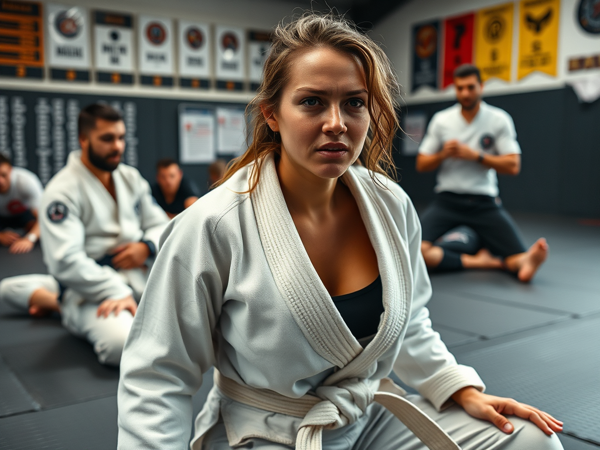
Sarah, 28, software engineer. VIG 7 (+1), DXT 9 (+1), RES 10 (+2). Fitness Level 1 (Casual). She's been feeling vulnerable walking home at night and decides to try Brazilian Jiu-Jitsu.
First Class: TN 50 (beginner class). Average of VIG (+1) + DXT (+1) + RES (+2) = +1 (round down). Fitness bonus +1. Total modifier: +2.
She rolls 2d10 = 41 + 2 = 43 vs TN 50. Success! She survives her first rolling session covered in bruises but feeling empowered. −2 SP from the adrenaline. The GM notes +1 to her self-defense skill.
Three months later: Sarah has attended 30+ classes. She's earned her blue belt. Her RES has increased to 11 (+2), and she feels noticeably more confident in daily life (+1 PRC). Her teammate Marcus (from Example 1) joins her at the gym for cross-training.
Not every character can afford a gym membership or has time to commute. Home workouts are free (or low-cost), flexible, and surprisingly effective for characters with the discipline to maintain consistency.
Pushups, pullups, dips, squats, lunges, muscle-ups — bodyweight training that builds impressive functional strength with zero equipment cost.
Check: VIG · TN 35 · 15–20 min
✅ Decent workout. +1 VIG recovery. −1 SP.
❌ Poor form. No benefit, minor wrist soreness.
Check: VIG + DXT mod · TN 45 · 15 min
✅ Upper body strength. +1 VIG recovery. −2 SP.
❌ Shoulder strain: −1 to overhead checks for 3 days.
Check: VIG + DXT mod · TN 50 · 30–45 min
✅ Excellent full-body workout. +2 VIG recovery. −2 SP. Strength gains visible after 2 months.
❌ Shoulder or lower back strain. −1 VIG for 3 days.
Check: VIG + DXT mod · TN 60–65 · 45–60 min
✅ Elite-level body control. +3 VIG recovery. −3 SP. Counts as major training event.
❌ Serious shoulder injury. −2 VIG for 2 weeks. Possible medical visit.
The most SP-effective exercise in the game. Yoga and Pilates are particularly recommended for characters dealing with mental health challenges, high stress, or chronic pain.
Check: VIG + RES mod · TN 30 · 20–30 min
✅ Flexibility + stress relief. −3 SP. +1 VIG recovery. Low injury risk.
❌ Minor muscle stiffness. No lasting harm.
Check: VIG + RES mod · TN 40 · 45–60 min
✅ Intense flexibility + cardio. −5 SP. +2 VIG recovery. +1 to RES checks next day.
❌ Overstretching. −1 VIG for 1 day. Dehydration risk.
Check: VIG + RES mod · TN 45 · 45–60 min
✅ Core strength + posture. −4 SP. +2 VIG recovery. +1 PRC after 2 months.
❌ Lower back discomfort. −1 to bending checks for 2 days.
Check: VIG + RES mod + DXT mod · TN 50 · 60–90 min
✅ Peak flexibility + balance. −5 SP. +3 VIG recovery. Counts as major training event.
❌ Fall from inversion. −1 VIG for 5 days. Possible sprain.
Maximum results in minimum time. HIIT is brutal, effective, and dangerous if done incorrectly. The ultimate "no excuses" workout — 20 minutes, no equipment needed.
VIG + Athletics mod
50 (beginner intervals) → 65 (Tabata, advanced circuits)
20–30 minutes (including warm-up and cool-down)
Maximum calorie burn. +2 VIG recovery. −3 SP. Cardiovascular gains 2× faster. EPOC effect: continued calorie burn for 24 hours.
Exhaustion. −1 VIG for 2 days. Poor form under fatigue: roll VIG at TN 40 or suffer muscle strain.
Cardiac stress event. −2 VIG for 1 week. +2 SP. VIG < 5: 1-in-20 chance of serious cardiac event — GM discretion.
Characters with VIG < 5 should not attempt HIIT at TN 55+ without GM approval. The cardiovascular stress can be genuinely dangerous. Start at TN 45 and build up over at least 4 weeks of successful lower-TN workouts.
For characters who want gym-quality results at home, here are the investment tiers:
$100–$300 · Living room corner
Resistance bands, yoga mat, jump rope, dumbbells
Effective for FL 0–2 maintenance.
$500–$1500 · Spare room / garage
Adjustable dumbbells, bench, pull-up bar, kettlebells, foam roller
Solid training for FL 1–3.
$2000–$4000 · Dedicated room / basement
Power rack, barbell set, Olympic plates, cable machine, cardio equipment
Near-gym quality for FL 2–4.
$4000–$8000+ · Large room / converted space
Complete gym: all strength equipment, treadmill, rower, stretching area, sound system
Professional-level for FL 3–5.
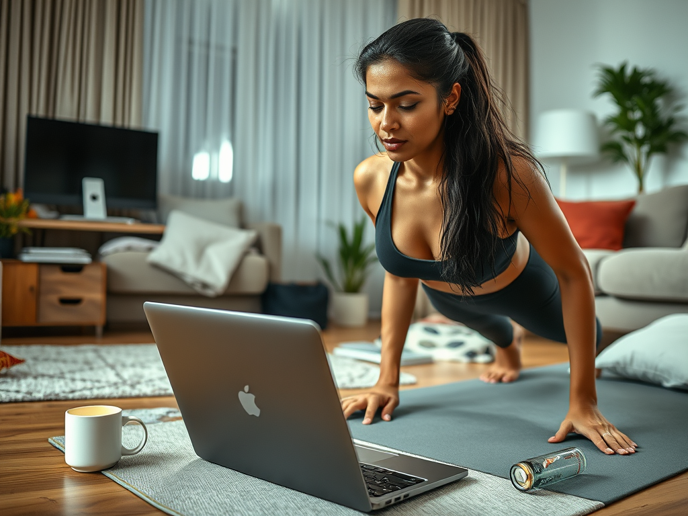
Priya, 35, remote worker. VIG 5 (+1), RES 12 (+2), Fitness Level 2 (Active). She's been working from home for 6 months and her fitness has slipped. She decides to do a HIIT session in her living room — no commute, no gym membership.
The Check: HIIT at moderate intensity = TN 55. Priya rolls 2d10 + VIG mod (+1) + Fitness bonus (+2) = 2d10 + 3.
She rolls 48 + 3 = 51 vs TN 55. Success! A grueling 25-minute session. She's drenched in sweat but feels amazing. +2 VIG recovery, −3 SP. The GM notes this as one of her weekly workouts toward maintaining Fitness Level 2.
Two weeks later: Priya tries a harder session (TN 60). She rolls 58 + 3 = 61 — a Partial Success. The workout was mostly effective, but she pushed too hard on the burpees and her lower back is sore for 2 days (−1 VIG). Lesson learned: progressive overload matters.
Exercise in Reality RPG is about long-term character development. Consistent training leads to permanent improvements — but the body adapts, and progress isn't linear.
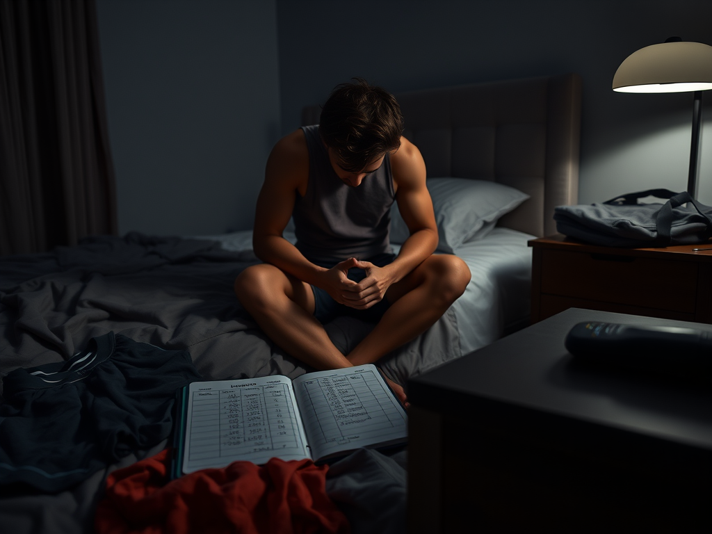
After a character achieves a permanent attribute gain, the plateau mechanic kicks in: all TNs for exercise checks increase by +5 for the next gain attempt. This represents the body adapting to the stimulus. To break through a plateau, the character must either:
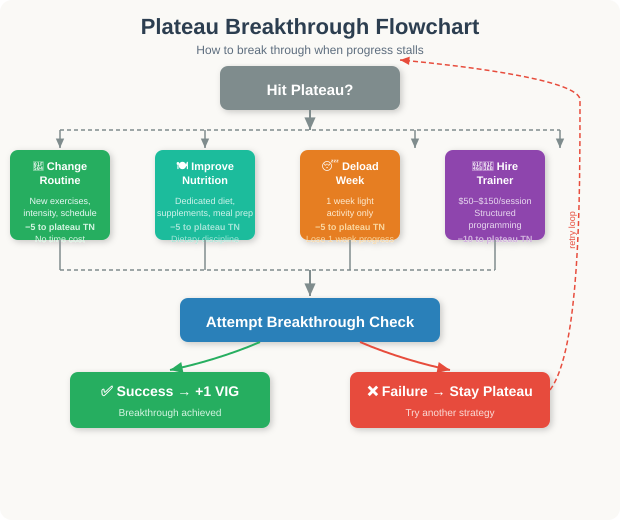
Characters who maintain a training log (app, journal, or spreadsheet) gain a mechanical bonus: −5 to all exercise TNs because they can track progressive overload systematically. The GM may require the player to note workouts between sessions.
Physical changes from exercise affect Presence, but the direction depends on the character's starting point and goals:
The GM and player discuss body image changes as part of character development. This is a narrative opportunity, not just a number.
The most realistic aspect of exercise: you can do too much. The overtraining track tracks accumulated fatigue and injury risk.
Trigger: Failed exercise check (any type)
Recovery: 3–7 days · VIG: −1 · SP: +1
Affected body part: −2 to checks using that area.
Trigger: Failed running/climbing/hiking check
Recovery: 1–3 weeks · VIG: −2 · SP: +2
Cannot run, jump, or do lower-body exercise. Crutches possible.
Trigger: Critical failure on running/cardio at Overtrained 2+
Recovery: 6–8 weeks · VIG: −3 · SP: +3
Complete rest. Cannot bear weight. Miss work/school possible.
Trigger: Critical failure on overhead exercise
Recovery: 3–6 months · VIG: −3 · SP: +4
Cannot use arms overhead. Surgery: $5,000–$15,000. Long-term impact.
Trigger: Critical failure on high-impact exercise
Recovery: 6–12 months · VIG: −4 · SP: +5
Surgery: $15,000–$30,000. Extended rehab. May never fully recover. Major life event.
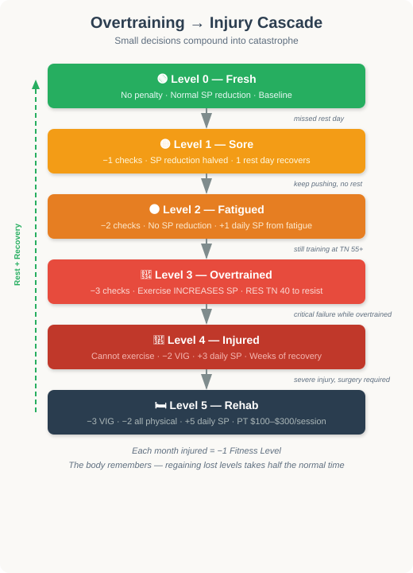
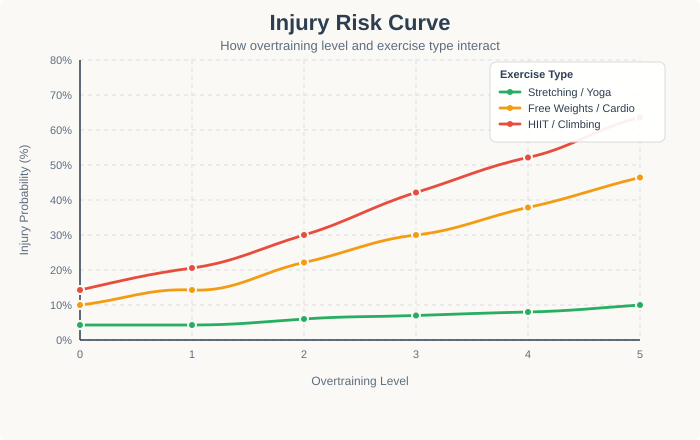
Injuries in Reality RPG are not just mechanical penalties. They affect:
Marcus (from Example 1) has been training hard for 3 months. He's reached Fitness Level 2 (Active) and is eager to push further. But he's also started a demanding new project at work, cutting his sleep to 5 hours/night and skipping rest days.
Week 4 of no rest days: Marcus is at Overtraining Level 2 (Fatigued). He attempts a heavy free weights session (TN 55) despite the −2 penalty. His effective modifier is now +1 (VIG) + 2 (Fitness) − 2 (fatigue) = +1.
He rolls 2d10 = 58 + 1 = 59 vs TN 55. Failure. Not just a bad workout — his body gives out mid-set. He drops a dumbbell on his shin.
Consequences: −1 VIG for 3 days (bruise). Overtraining moves to Level 3 (Overtrained). The GM requires a RES check (TN 40) — Marcus rolls 2d10 + RES mod (+1) = 42 + 1 = 43. Failure. He can't resist — he goes to the gym again the next day despite knowing he should rest. The cycle continues.
The GM uses this to explore Marcus's relationship with exercise — is it healthy discipline or is it becoming compulsive?
When a character trains for a specific goal — a marathon, a competition, or even "beach body for vacation" — the exercise system shifts to event preparation mode:
8 weeks · Weekly TN 40 · Event TN 35
✅ PRC +1 (temporary, 1–2 mo). Confidence boost: −2 SP during vacation.
8 weeks · Weekly TN 42 · Event TN 45
✅ −3 SP. FL advancement progress. Personal achievement.
12 weeks · Weekly TN 50 · Event TN 55
✅ −5 SP. Major FL milestone. +1 PRC if proud of achievement.
16 weeks · Weekly TN 55 · Event TN 65
✅ −5 SP. Elite FL milestone. +2 PRC. Narrative landmark event.
12–24 weeks · Weekly TN 55–65 · Event TN 60–70
✅ +1 Combat skill. +1 RES. Self-confidence: +1 PRC. Respect from community.
12 weeks · Weekly TN 55 · Event TN 60
✅ +1 permanent VIG if win. +1 PRC. Community recognition.
Exercise has well-documented mental health benefits. In the game, this is a mechanical interaction with the Mental Health system (see Mental Health page):
Aerobic: running, swimming, cycling
SP: −3/session (vs normal −2)
+1 to mood checks. After 4 wks: possible episode resolution (RES TN 35).
−5 to exercise TN (harder when depressed, but bonus SP compensates)
Recommended: yoga, swimming, walking in nature
SP: −4/session
+2 to all RES checks next day. After 6 wks: −10 to future anxiety episode TN.
−5 to exercise TN (harder to start, amplified benefits once engaged)
Recommended: any regular exercise, especially HIIT or martial arts
SP: −3/session
Reduces baseline stress. After 4 wks: +1 to all daily life checks (better energy, focus).
No TN modifier. Consistency is key.
Recommended: morning exercise (any type), NOT evening HIIT
SP: −2/session
+2 to sleep quality checks. After 2 wks: sleeping 7+ hours consistently, accelerating all recovery.
−5 to exercise TN (fatigue makes exercise harder)
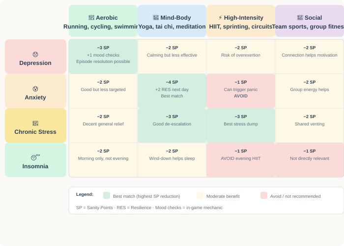
When exercise is being used as part of mental health treatment, the GM should reduce all exercise TNs by 5 (the character is motivated by therapeutic need) but double the SP reduction on success. This reflects the real-world finding that exercise is particularly effective for mental health when done consistently, even at moderate intensity.
When exercise becomes compulsive, it shifts from advantage to disadvantage. This is a character flaw that provides mechanical costs:
Effect: Cannot rest. Overtraining advances +2/workout instead of +1.
Detection: Refusing rest days despite clear fatigue.
Effect: −1 EXP per missed social event. Relationships may suffer.
Detection: Fails EXP checks to maintain social connections.
Effect: Recovery takes 2× longer. −1 VIG per sick-day workout.
Detection: Attempts exercise checks while having a cold/flu.
Effect: PRC decreases despite physical improvements. Never feels "good enough."
Detection: PRC drops 1/month of obsessive exercise without mental health check.
Effect: Financial strain. −1 to Finance checks. Possible debt.
Detection: Spending >$300/month on fitness-related expenses.
To recover from exercise addiction, a character must make weekly RES checks at TN 45 to resist compulsive training. Each success represents a day they chose balance over compulsion. After 4 successful weeks, the addiction subsides. Failure means another week of compulsive behavior and its associated penalties. Therapy (EXP or INT-based counseling) provides −10 to the TN.
Working out with others — gym buddies, group classes, sports teams — adds a social dimension to the exercise system:
Bonus: −5 to exercise TN (accountability, spotting)
Cost: Must coordinate schedules; may need to adjust to partner's level
Narrative: +1 EXP with buddy/session. Potential friendship or romance.
Bonus: −3 to TN (group energy) + −1 SP (community feeling)
Cost: $15–$30/class. Fixed schedule.
Narrative: Community belonging. +1 EXP with regulars. Networking.
Bonus: −5 to TN (team motivation) + 2 EXP with teammates
Cost: $50–$200/season. Commitment to schedule.
Narrative: Strong team bonds. Shared events. Leadership opportunities.
Bonus: −10 to exercise TN + −5 to plateau TN. Structured programming.
Cost: $50–$150/session (2–3×/wk = $400–$1800/mo).
Narrative: Trainer becomes recurring NPC. Can advise on non-exercise topics.
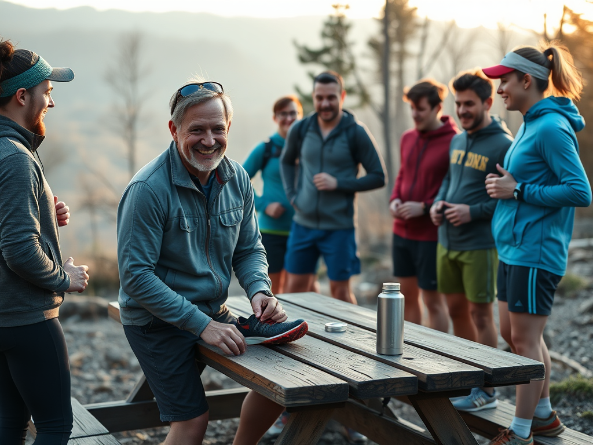
James, 45, teacher. VIG 8 (+1), EXP 11 (+2), Fitness Level 1 (Casual). He's been lonely since his divorce and joins a local running club on Saturday mornings.
First Run: The group does a 3-mile easy run. TN 40. James gets the social bonus: −5 to TN = effective TN 35. He rolls 2d10 + VIG (+1) + Fitness (+1) = 2d10 + 2.
He rolls 28 + 2 = 30 vs TN 35. Strong Success! The group energy carried him through. He finishes feeling great. −2 SP (exercise) + 1 SP (social connection) = net −3 SP.
After the run: The group goes for coffee. James makes an EXP check (TN 45) to connect with fellow runners. He rolls 2d10 + EXP (+2) = 33 + 2 = 35. Strong Success! He bonds with Lisa, a nurse who runs 5 miles every Saturday. Over the next month, their friendship deepens — potentially into something more.
The GM uses the running club as a recurring narrative element: races, rainy days when James has to choose between running and sleeping in, Lisa's birthday run, etc.
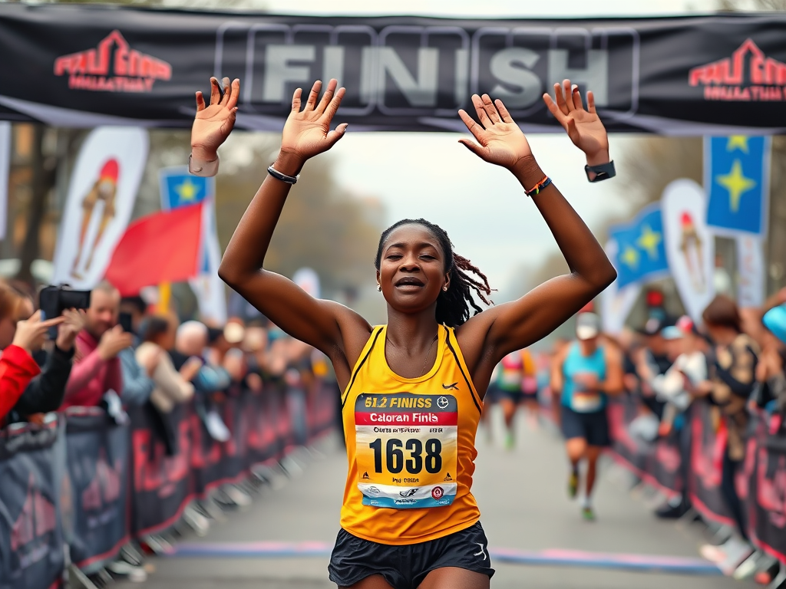
Aisha, 30, grad student. VIG 10 (+2), RES 14 (+2), Fitness Level 3 (Fit). She's signed up for her first marathon in 16 weeks. The GM sets up an event training arc.
Weekly Training Checks: Each week, Aisha makes one running check at TN 55 (marathon training TN). She gets a +3 modifier from Fitness Level 3 and +2 from VIG = +5 total.
Weeks 1–8: Aisha succeeds 6 out of 8 weeks. Life interferes twice (a family emergency and finals week). Her cumulative bonus is +12 (6 successes × +2, capped at +10, so +10).
Weeks 9–12: She hits a plateau. The GM increases the weekly TN to 60. She succeeds 3 of 4 weeks. Cumulative bonus stays at +10 (cap reached).
Weeks 13–15: Taper week. Light training — automatic successes. She's ready.
Race Day: TN 65 for the marathon. Aisha rolls 2d10 + 5 (base) + 10 (training bonus) = 2d10 + 15.
She rolls 44 + 15 = 59 vs TN 65. Success! She finishes her first marathon! The GM describes her crossing the line at 4:12, tears streaming, surrounded by cheering family. −5 SP from the accomplishment. Her Fitness Level advances to 4 (Athletic). She gains a permanent +1 VIG. PRC +1 from her newfound confidence and toned physique.
This becomes a defining moment in Aisha's campaign — the marathon is referenced throughout the rest of the game as a benchmark of her determination and capability.
A consolidated reference for all exercise activities and their target numbers:
Don't make players roll for everything. If a character is consistently exercising without dramatic stakes, assume success and track progress narratively. Only call for rolls when:
Use exercise as character development. A character who starts sedentary and works their way to Athletic fitness should feel like an achievement. The physical transformation is a narrative arc, not just stat bumps.
Weather matters. Reference the Environment page — rain makes running harder (+5 TN), extreme heat makes outdoor exercise dangerous, snow can make it impossible. Indoor gyms provide shelter.
Time is a resource. Every hour spent at the gym is an hour not spent working, socializing, or resting. Characters must balance their exercise with the demands of daily life — this is where the real roleplay happens.